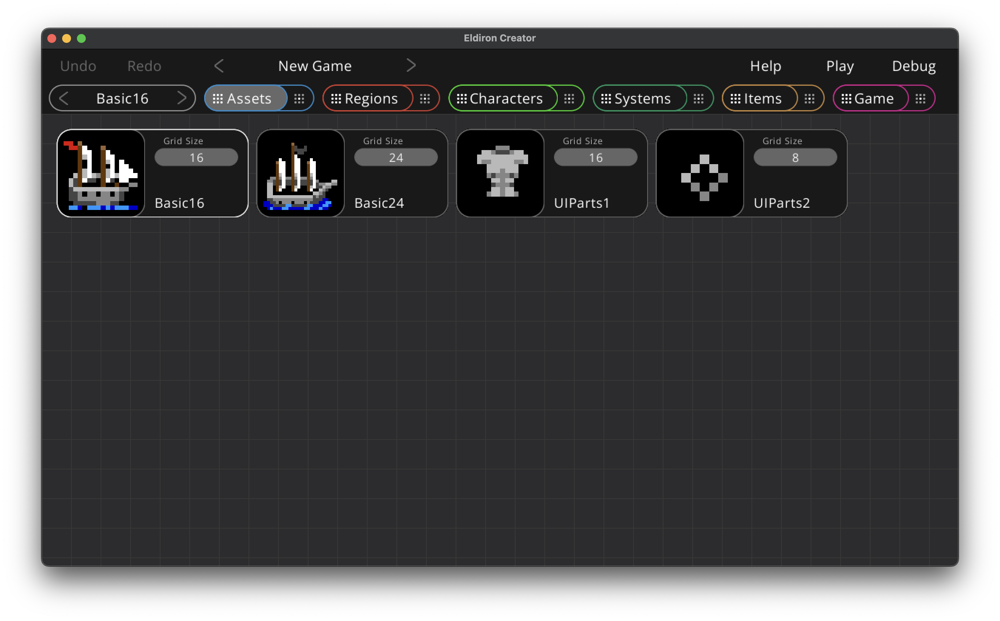
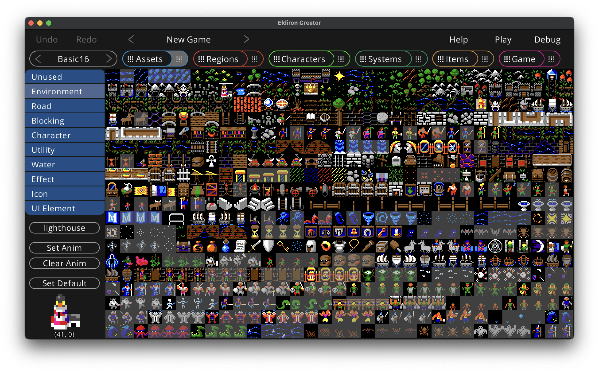

Assets View: Overview
In the assets overview you can add to and edit the assets of your game.

The assets overview displays a node for each asset present in the assets directory.
Assets currently are:
-
Audio files.
-
Tile-maps. The icon displayed for the node is the tile set as default tile in the details view. You can set the grid size of the tile-map (the size of the square tiles in the tile-map) by clicking on the Grid Size property of the node.
You can edit the details for a given asset by clicking the preview thumbnail of the asset node you want to edit.
Details: Tile-maps

The tile-maps details view lets you assign meta-data for each tile in the tile-map. This is an important step as Eldiron needs to know how each tile is supposed to be used in-game.
You can click on a tile to select it (or multi-select tiles by clicking and dragging the mouse over a range of tiles).
The most important step is to give each tile a usage role, this can be one of:
- Unused - This tile is ignored and will not be shown in the region editor.
- Environment - This is the default tile type for any kind of non blocking terrain. Use it for grass, floors etc.
- Road - Same as Environment but the AI in the Pathfinder node will prefer road tiles over environment tiles.
- Blocking - Every Environment tile which is not accessible to the player, like rocks, mountains, walls etc.
- Character - Character tiles, like animation tiles for a warrior.
- Utility - Utility character tiles. Like a ship or a horse.
- Water - Water tiles. Tiles where a ship can go.
- Effect - Effect tiles, like an explosion.
- Icon - In game icons for inventories etc (swords, armor etc.).
- UI Element - UI elements for screens and widgets.
When you click the Enter Tags button you can assign command separated tags to a tile, like cupboard or waterfall. Tags are always lower case. Tags can be used to quickly find tiles or to auto-convert regions to different tile-maps (not yet implemented).
By clicking the Set Anim button you create an animation for the first tile in the selected range. The other tiles will be set to Unused by default.
The Clear Anim button will remove an animation sequence form the currently selected tile.
The Set Default button will set the currently selected tile as the default tile of the tile-map, it will be shown as the tile-map thumbnail in the overview.